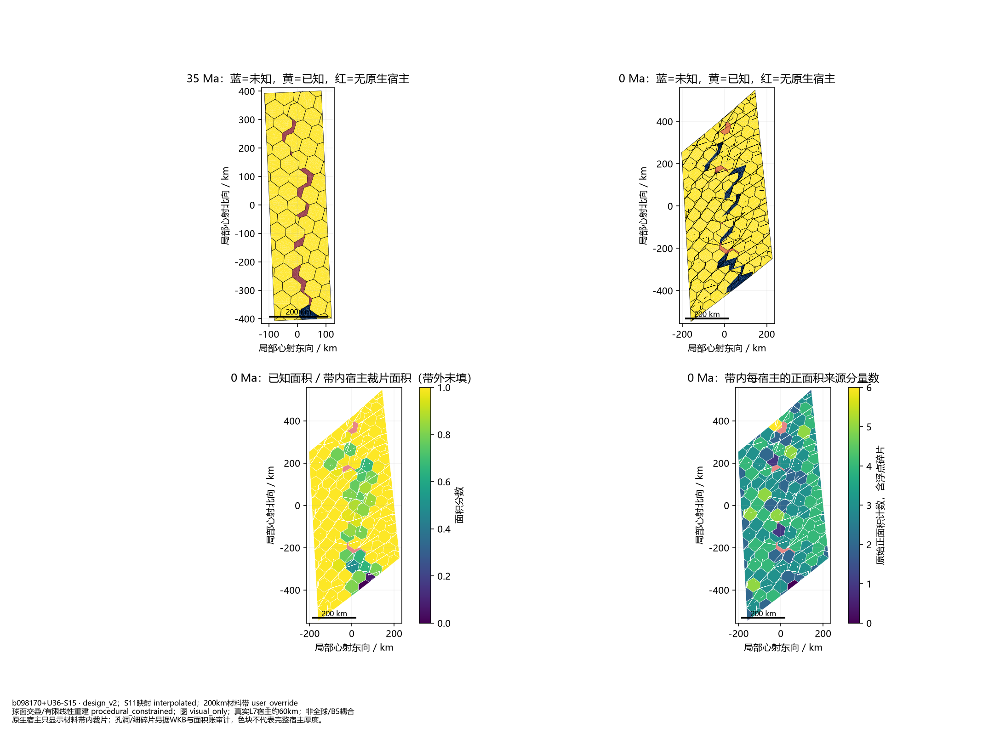
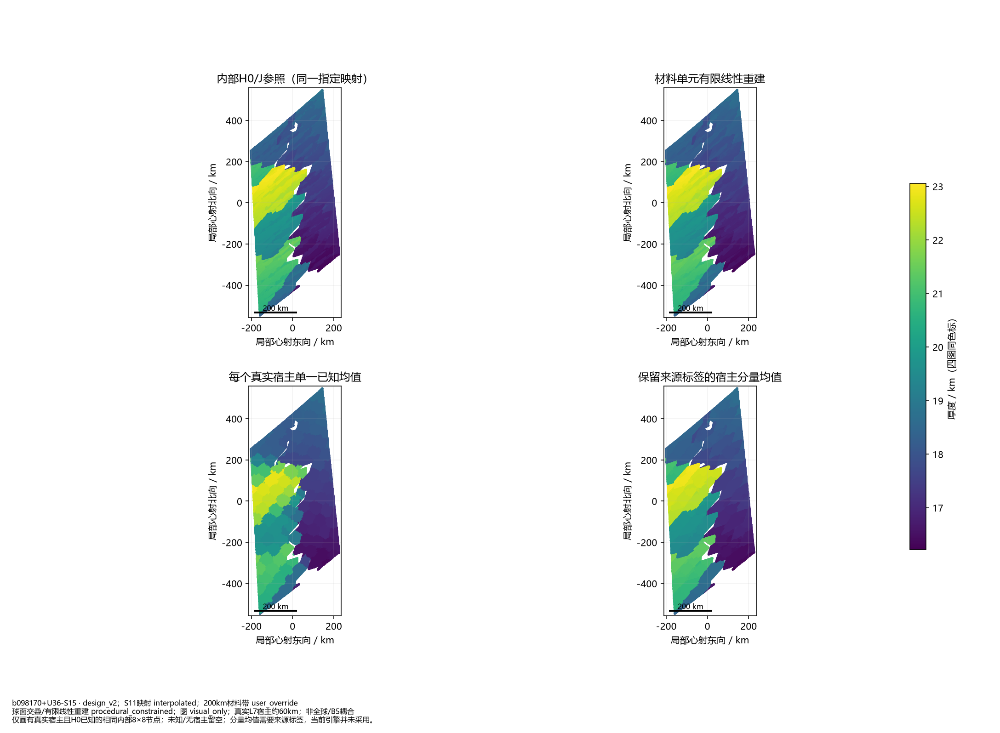
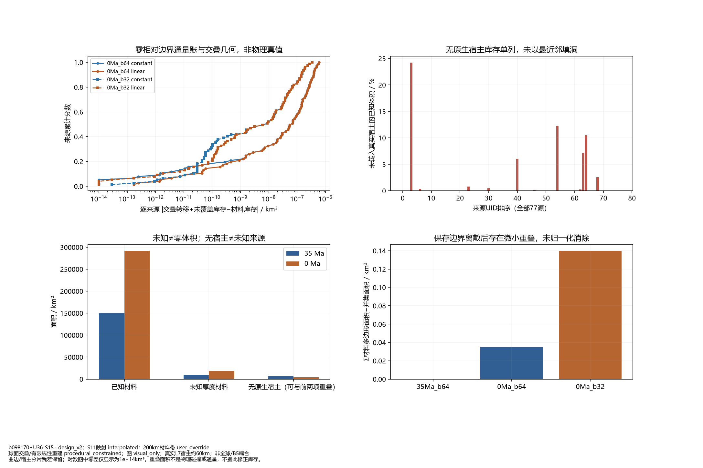
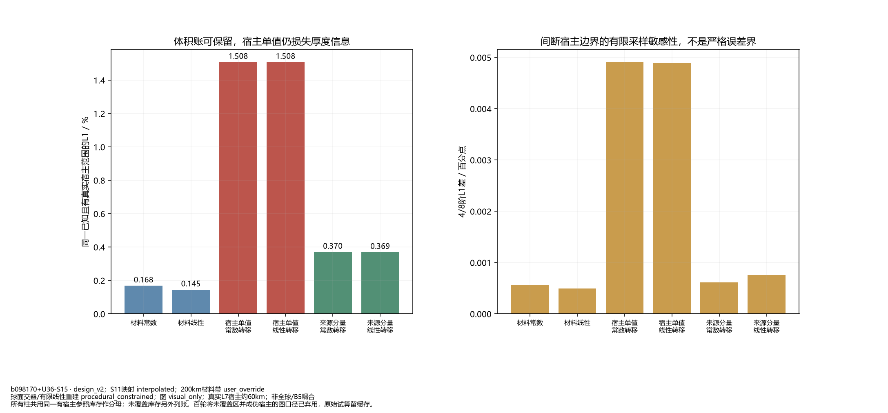

原生宿主只显示材料带内裁片；孔洞/细碎片另据WKB与面积账审计，色块不代表完整宿主厚度。

仅画有真实宿主且H0已知的相同内部8×8节点；未知/无宿主留空；分量均值需要来源标签，当前引擎并未采用。

曲边/宿主分片残差保留；对数图中零差仅显示为1e−14km³。重叠面积不是物理碰撞或通量，不据此修正库存。

所有柱共用同一有宿主参照库存作分母；未覆盖库存另外列账。首轮将未覆盖区并成伪宿主的图口径已弃用，原始试算留缓存。